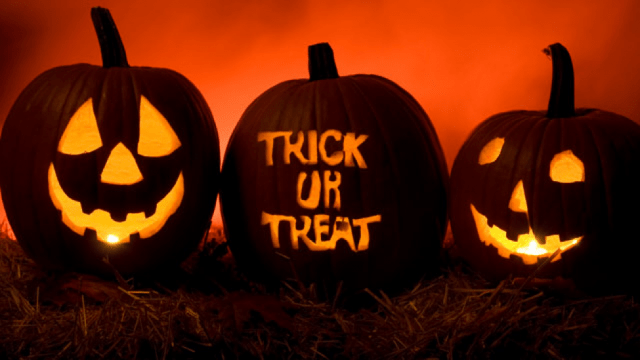
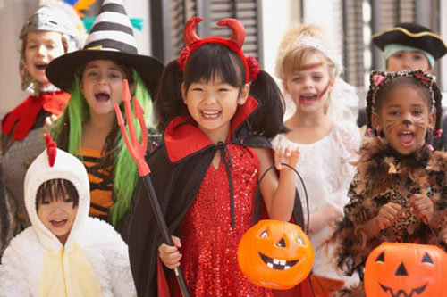
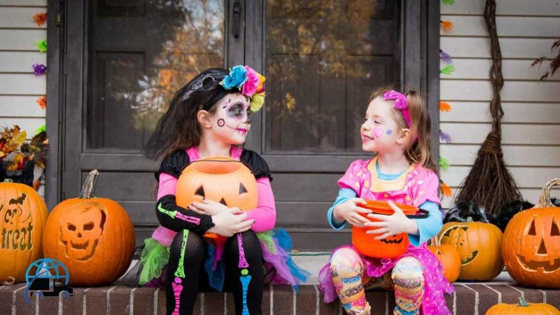

Halloween là một lễ hội truyền thống diễn ra vào ngày 31/10 hàng năm ở nhiều nước Tây Âu và Bắc Mỹ. Hiện nay, lễ Halloween đã trở nên khá phổ biến tại Việt Nam, tuy nhiên không phải ai cũng biết về nguồn gốc và ý nghĩa của lễ hội này.
Lễ Halloween được tổ chức hằng năm vào ngày cuối cùng của tháng 10, bắt đầu vào buổi chiều tối cho tới 12 giờ đêm. Người dân tham gia lễ sẽ trang trí nhà cửa sao cho rùng rợn. Trong dịp này, trẻ con hoặc người lớn khi ra ngoài cũng hóa trang thành những nhân vật đáng sợ hoặc bất kỳ nhân vật nào họ thích, sau đó tới từng nhà để gõ cửa nhận kẹo và chúc tụng.
Bản thân từ “Halloween” có xuất xứ từ Thiên Chúa Giáo, đó là lối viết tắt cho "All Hallows’ Evening” (buổi tối của Lễ Chư Thánh) diễn ra vào ngày đầu tiên của tháng 11, tháng cầu cho các linh hồn đã qua đời.

Những chiếc đèn lồng bí ngô mang theo ý nghĩa của ngày Halloween
Nhưng cũng có tài liệu cho rằng, lễ hội Halloween ngày nay chịu ảnh hưởng nhiều từ lễ Samhain của dân tộc Celt, một dân tộc sống cách đây hơn 2000 năm trên các vùng đất bây giờ là Anh quốc, Ai-len (Ireland) và miền Bắc nước Pháp…
Vào ngày 1/11 hàng năm, người Celt sẽ tổ chức lễ hội Samhain để đánh dấu cho sự kết thúc của mùa hè và thời tiết chuyển sang đông, đây cũng là thời điểm để khởi đầu một năm mới.
Họ tin rằng khi mùa hè kết thúc và mùa đông lạnh lẽo, tràn đầy bóng tối bắt đầu thì vào đêm trước của năm mới (tức ngày 31/10) ranh giới giữa sự sống và cái chết trở nên mờ nhạt, điều này khiến cho những linh hồn đã khuất có thể tìm được đường về cõi người sống.
Các linh hồn sẽ trở về thế gian tìm kiếm thân xác để hồi sinh. Do đó vào ngày này, người dân thường dập tắt các đám lửa trong nhà của họ, biến bản thân trở nên lạnh lẽo và hy vọng các linh hồn sẽ bỏ qua.
Đồng thời, họ cũng có tục lệ mặc các trang phục mô phỏng ma quỷ, diễu hành ồn ào quanh các khu phố để trấn an nỗi lo sợ các linh hồn.

Halloween giờ là dịp để mọi người cùng nhau vui vẻ, chơi đùa.
Halloween giờ là dịp để mọi người cùng nhau vui vẻ chứ không mang nặng ý nghĩa tôn giáo. Theo thời gian, lễ Halloween đã du nhập sang rất nhiều nước khác nhau, nhưng mỗi nước đều biến tấu nó đi để có ngày lễ Halloween của riêng mình. Và cho đến ngày nay, lễ hội này đã trở nên phổ biến với nhiều quốc gia trên thế giới.
Gắn liền với truyền thuyết của người Ai-len về anh chàng Jack, một chàng thiếu niên đã chết nhưng linh hồn không được phép vào Thiên Đàng vì lúc sống, anh ta vốn là một người tham lam, bủn xỉn, thường cất giấu tiền bạc, keo kiệt không hề bố thí cho ai một chút gì.

Cùng kết nối và san sẻ yêu thương.
Thế nhưng anh ta cũng không thể vào Địa Ngục vì lúc còn sống anh ta đã từng chơi đùa với ma quỷ, nên quỷ không thể bắt anh.